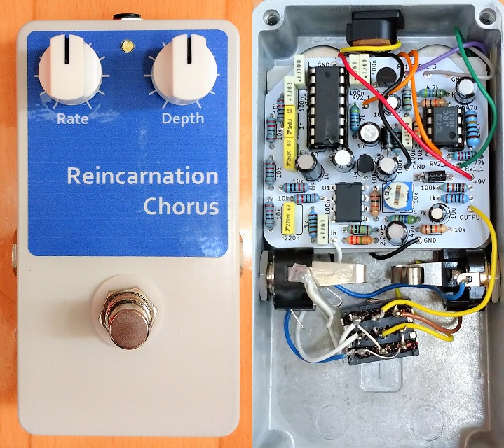
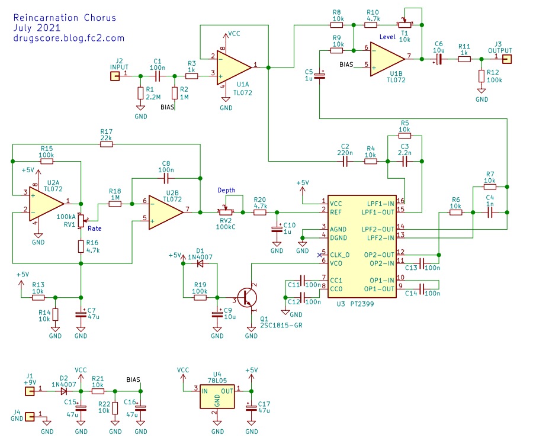
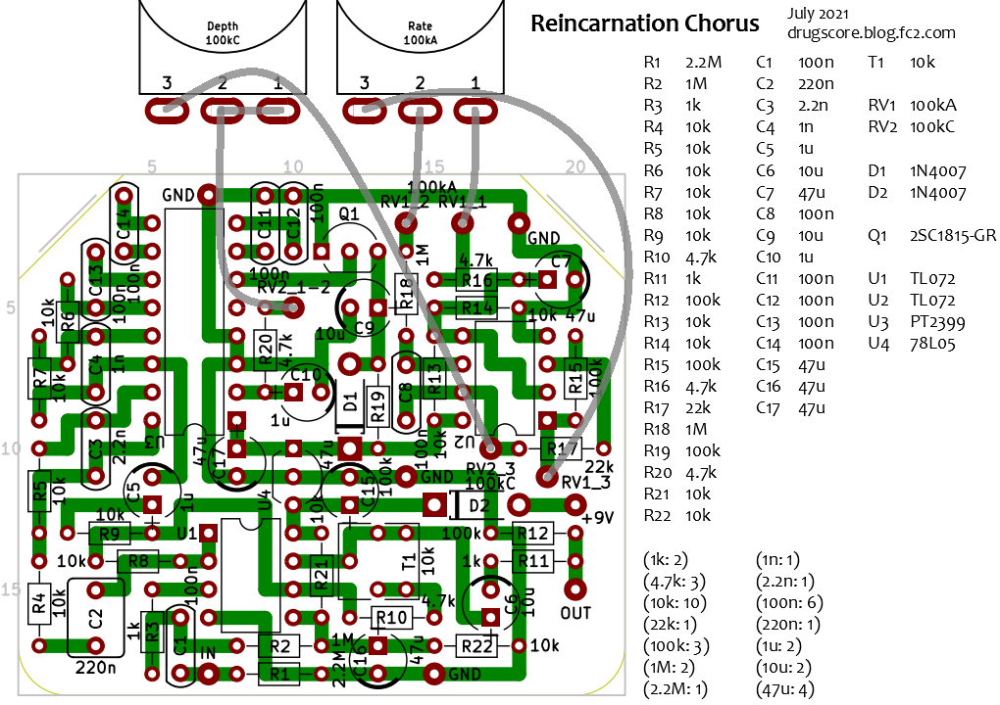
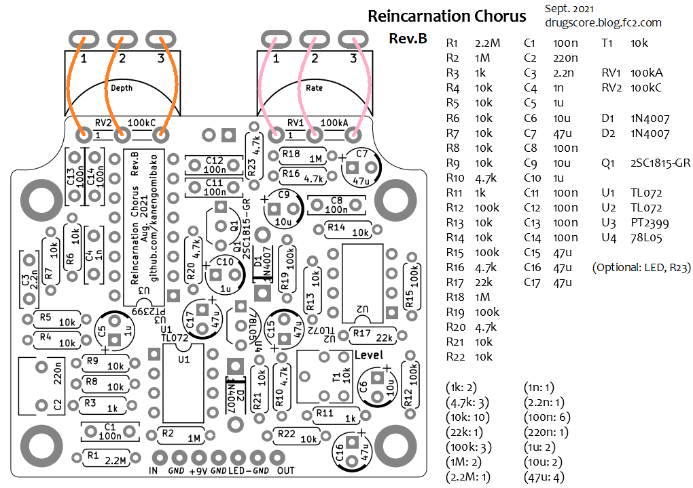

Reincarnation Chorus
2021年08月23日 カテゴリー：自作エフェクター（アナログ）

デジタルディレイIC PT2399を使ったコーラスを昔設計しようとしてあきらめたことがあり、再挑戦ということで製作しました。PT2399自体の解説についてはElectroSmash - PT2399 Analysisや過去記事（PT2399 周辺コンデンサ検討）をご参照ください。
PT2399の6番ピンを使ってディレイタイムを適切に揺らすのは困難だったので、2番ピンへLFOを接続するLittle Angel Chorusをベースに考えました。ただほとんど別物になったため、Reincarnation（リーンカーネーション、生まれ変わり）という名前としました。
▽回路図・レイアウト（KiCadデータはGitHubへ）


（実際は基板発注しましたが、ユニバーサル基板で製作可能なレイアウトとしました。）
- 入力・出力
入力部がオペアンプの反転入力なのは気分的に嫌なので、非反転の入力バッファとしました。出力は普通のミキサー回路で、念のため音量調節トリマーを設けています。
- LFO（Low Frequency Oscillator）
BOSS CE-2とほとんど同じLFO回路です。揺れが速い方はあまり使わないので、RateポットはAカーブにしました。三角波による揺れなので、クセがないかかり方だと思います。LFO用オペアンプを5V駆動とし、PT2399へコンデンサなしで接続していますが、PT2399の内部回路が不明確なので安全ではないのかもしれません。
- クロックノイズ対策
LFOがあるエフェクターでは揺れの周期に合わせたノイズ（クロックノイズ）が聞こえる場合があり、ポットへの配線を短くしたり、部品レイアウトに注意したりする必要が出てきます。また、LFOに使うオペアンプは低消費電力のものを使うのが普通です。今回はTL072でもクロックノイズは聞き取れませんでしたが、TL062やNJU7062、NJU7032を使うとよりよいでしょう。※ニセモノのPT2399ではクロックノイズが出てしまうことがあるので、本物と思われるものを使う必要があります（参考→いろいろなPT2399）。
- ディレイ音のローパスフィルタ（LPF）・ハイパスフィルタ（HPF）
通常アナログコーラスではディレイ音に2次や3次のLPFが使われますが、シンプルさを優先して1次LPFとしています。アナログコーラスと同じ音にはならないということになりますが、特に出音に違和感はありません。C3またはC4で高音域調整（LPF）、C2またはC5で低音域調整（HPF）ができます。
- ラッチアップ防止回路
ディレイタイムをできるだけ短くするため、PT2399の6番ピンをアースに直結したいところです。しかし、電源オン時に6番ピンとアース間の抵抗値が小さすぎると動作しなくなる（ラッチアップ）可能性があるため、これを防ぐ回路が6番ピンに接続されています。使用するトランジスタは汎用のものなら（ランク含め）基本何でもOKです。この回路についてもPT2399 Analysisに解説があります。また、6番ピンとアース間の抵抗値が100Ω以下ではディレイタイムは減らないと同ページに記載がありますが、実測では1msディレイタイムが減りました。ただし消費電流が増えてしまい、全体の消費電流は38mAとなっています。
- 最短ディレイタイムの壁
PT2399の最短ディレイタイムは30msのため、原音とディレイ音の分離感が感じられる場合があるかもしれません。ビブラートにする場合、原音なしなので音が30ms遅れて出る状態（高レイテンシ）になってしまい、使いにくいと思います。フィードバックを入れてフランジャー的に使用することも考えられますが、フランジャーのディレイタイムは通常もっと短い（10ms以下）ため、これも無理があるでしょう。
- HT8970への換装
前回記事（HT8970 特性測定）の通り、PT2399をHT8970へ差し替えて最短ディレイタイムを17msにすることができます。少し特性が違うので、C13とC14を100nF→47nFに、R20を4.7kΩ→2.2kΩにするとよさそうです。
---以下2021年9月14日追記---
Rate、Depth両方が最大の状態だとボツボツというクロックノイズが聞こえることがわかりました。どちらか一方を少し下げての使用をお願いします。
▽Rev.B基板（基板販売ページはこちら）

基板の再販にあわせて新たに作り直しました。ポットの向きが以前と違い上下逆さまですが、各配線をやりやすくしています。また、LEDとR23（LEDの電流制限抵抗）を基板に配置することが可能です。「LED-」表記のパッドにLEDのカソードが接続されています。